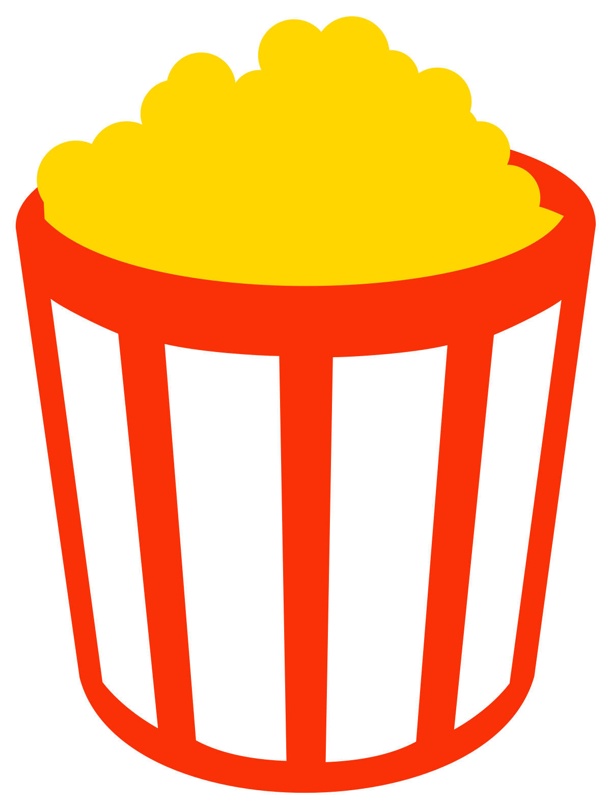

Review of Revenge of the Sith
Austin Silvia
4/30/25

Rotten Tomato Score: 79%

Popcornmeter: 66%
My Personal Rating
Out of all of the Star Wars films this is my favorite because of how emotional and epic it is. Revenge of the Sith (ROTS) has the best intro of any Star Wars movie. The only thing I don't like about this movie is the romantic dialog. Other than that, this movie is amazing. What also made this movie amazing was how well the actors did in it. Their acting was incredible. This movie also contains a big plot twist with the clone army turning against the Jedi and killing them.
This movie is so wonderfuk because of the fact that it represents the ending to an entire era within the Star Wars universe. In this movie, the jedi order is destroyed, the first ever glactic empire is formed, the Clone Wars ends, and the sith now rule the galaxy. That is what made this movie so amazing.
Trivia
- Ewan Mcgregor and Hayden Christensen didn't have any stunt doubles. All of their fight scenes were done by them.
- During the youngling scene at the jedi temple, Hayden Christensen yelled boo to get a scared reaction out of the children for the scene
- When all of the prequals of Star Wars came out, they were not universally loved. But as time went on and people started to look back on those movies, they began to love and appreciate them.